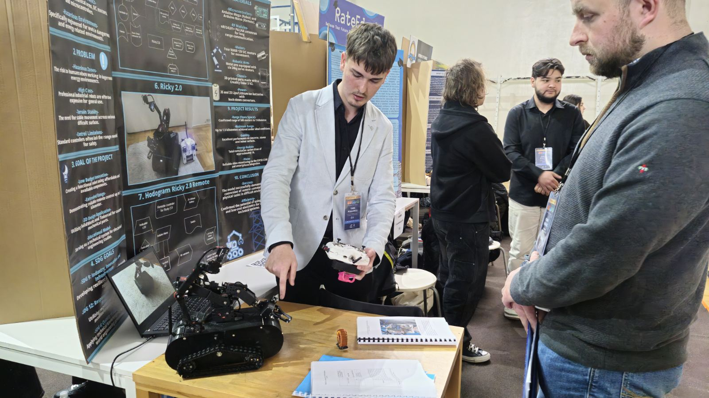

Electrical Technician | Robotics Innovator | Full-Stack Developer
I am an 18-year-old Electrical Engineering student from Sarajevo, specializing in Power Systems (Energetika). My strength lies in bridging High-Voltage engineering with Low-Voltage electronics.
Advanced tracked robot with an articulated arm. Designed in SolidWorks.
RoboticsArduinoEnergy-harvesting research converting vibrations to electricity.
EnergyHardwareDual-axis LDR-based system for solar energy optimization.
SustainabilityLaptops, PCs, and high-end Audio diagnostics.
Professional service for PlayStation and Xbox.
Power distribution and circuit installations.
🥇 1st Place - BOSEPO State Competition
🥉 3rd Place - SEF 2026
🥉 3rd Place - START 2024